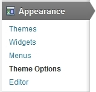

FoodTruck & Restaurant
10 Styles - Responsive Wordpress Theme
- Created: 12/02/2014
- latest Update: 12/02/2014
- By: createIT
- themeforest.net/user/createit-pl/portfolio
- Email: office@createit.pl
Thank you for purchasing this theme. If you have any questions that are beyond the scope of this help file, please feel free to email via the user page contact form on this page. http://themeforest.net/user/createit-pl/portfolio Thanks so much!
Startup
Installation
The theme can be installed by uploading it to your server via ftp in wp-content/themes folder. Copy themes
directory into wp-content/themes of your WordPress installation.
You can also use archive (zip file)
from the theme's folder (after you've unarchived the package you've downloaded from
Themeforest) and install it via Appearance > Themes > Install Themes tab. To use the theme you need to
activate it.
- Remember that you MUST install Burger Lover theme (burger_main.zip file in downloaded package) before any other flavour! Burger Lover theme contains all required files, other themes are Child Themes only and require Burger Lover to work properly.
- After Burger Lover installation you can optionally install Child Theme in analogously way to Burger Lover - just select file with choosen flavour.
- Don't forget to activate Theme once it installed.
After installation you should see the following folder structure:
- assets
- css - theme stylesheets
- img - theme images
- js - theme javascripts
- docs - theme documentation
- framework - custom framework for WordPress Themes
- lang - .POT translation template file for theme
- templates - theme specific template files
- theme - theme specific files
If you want to copy templates via FTP, theme "Burger Lover" should be located in folder "burger". If you change name of the folder other themes may not work correctly.
Setting up Theme Options
Once your theme is installed you can start theme configuration
- Menu type
- Logos
- logo sticky: 390x174
- logo small-sticky: 171x70
- logo standard: 252x103
- logo sticky top-margin: 45
- logo small-sticky top-margin: 24
- logo standard top-margin: 58
- menu standard top-margin: 145
- menu sticky top-margin: 145
- logo sticky: 288x247
- logo small-sticky: 82x70
- logo standard: 140x120
- logo sticky top margin:-15
- logo small sticky top margin: 24
- logo standard top-margin: 58
- menu standard top-margin: 145
- menu sticky top-margin: 145
- logo sticky: 334x203
- logo small-sticky: 129x70
- logo standard: 221x120
- logo sticky top margin: 31
- logo small-sticky top margin: 34
- logo standard top-margin: 58
- menu standard top-margin: 138
- menu sticky top-margin: 138
- logo sticky: 217x218
- logo small-sticky: 69x70
- logo standard: 119x120
- logo sticky top-margin:58
- logo small-sticky top-margin :24
- logo standard top-margin: 58
- menu standard top-margin: 138
- menu sticky top-margin: 138
- logo sticky: 451x210
- logo small-sticky: 163x70
- logo standard: 260x112
- logo sticky top margin:33
- logo small-sticky top margin: 30
- logo standard top-margin: 58
- menu standard top-margin: 140
- menu sticky top-margin: 140
- logo sticky: 340x210
- logo small-sticky: 141x70
- logo standard: 238x118
- logo sticky top-margin: 33
- logo small-sticky top margin: 24
- logo standard top-margin: 44
- menu standard top-margin: 140
- menu sticky top-margin: 140
- logo sticky: 241x173
- logo small-sticky: 100x70
- logo standard: 172x120
- logo sticky top-margin: 41
- logo small-sticky top-margin: 24
- logo standard top-margin: 58
- menu standard top-margin: 142
- menu sticky top-margin: 142
- logo sticky-left: 282x209
- logo small-sticky: 96x70
- logo standard: 160x117
- logo sticky top-margin:28
- logo small-sticky top-margin: 29
- logo standard top-margin: 58
- menu standard top-margin: 145
- menu sticky top-margin: 145
- logo sticky: 325x237
- logo small-sticky: 110x70
- logo standard: 188x120
- logo sticky top-margin: 33
- logo small-sticky top-margin: 29
- logo standard top-margin: 48
- menu standard top-margin: 138
- menu sticky top-margin: 138
- logo sticky: 160x157
- logo small-sticky: 71x70
- logo standard: 118x116
- logo sticky top-margin54
- logo small-sticky top-margin:50
- logo standard top-margin:58
- menu standard top-margin: 142
- menu sticky top-margin: 142
- Content
- Setting up Homepage
- Posts
- Set up menu
- Widgets
via Appearance / Theme Option / General - Main select menu type (Navigation bar type). We recommend setting "sticky" to onepager - menu will be always at the top of the screen - even when you scroll down and "standard" to multipage.
In the same section you can upload logos (there are a few types of logos - check description under every type to know more).
Recommended sizes and margins (in px) for the logos and navbars:
Burger Lovervia Pages / Add new create page content - check out examples below:
Code
And result
To set up homepage you need to use Appearance / Theme Option / General - Pages (at least one page should be added via Pages / Add new). If you'd set up home page via Settings/Reading - Front page displays it wont' work properly.
via Appearance / Theme Option / General - Posts set up your blog page, where posts will be displayed.
via Appearance / Menus set up menu. To create Onepager follow this steps.
In multipage we recommend set up standard menu:
> add pages from the left side to your menu and select chceckbox "standard navigation" below.
Set up widgets to your page in section Appearance / Widgets. Drag and drop widget in section, in which you want it to appear, then set up widget options. To find out more about section check out widgetarea description. If you decide to exclude some widget, but you may want to use it in future, just drag it and drop in "Inactive Widgets" area. You won't lose your widget settings in that way.
1-Click Demo Import
You can easily configure theme to look exactly like on a demo page. Once theme is activated, navigate to Appearance > Theme Options > General > 1-Click Demo Import and click "import" button.
That's it - your site is now ready!
XML import
Please refer to 1-Click Demo Import section to automatically setup Wordpress installation. All steps described below are configured by 1-Click Demo Import.
Before import data and options you should set the appropriate values for the "Thumbnail size" and "Medium size" in "Image Size" section via Settings > Media.
1. Import content
You can import posts, pages, comments, categories and tags from your Wordpress export file via Tools > Import. You can use our demo data for the proper theme from the wordpress.xml file in burger/theme/demo/child_theme_catalog folder.
2. Import options
If you have exported some previous FoodTruck & Restaurant Theme options, you can load it via Appearance. You can use our demo options for the proper theme from the theme_options.txt file in burger/theme/demo/child_theme_catalog folder.
In burger/theme/demo/child_theme_catalog folder you can also find wp_options.txt - that is internal file, not for import..
Please remember to activate the main menu via Appearance > Menus
Simple configuration
In this chapter we will show you what you need to do to create a simple site using our theme. Deeper analysis on the functionality of the theme is provided in several next chapters. You can also see the usage showcase of the theme on our demo site
1. Logo setup
Go to Appearance > Theme Options and choose the logo icons via Media Library. Always remember to click the "Save changes" button after providing some changes via Theme Options screen.
2. Setup pages
Create pages for Your site via Pages > Add New menu. For the beginning we recommend to create Homepage and set it as the Wordpress Homepage via Pages section in Appearance > Theme Options.
When creating your pages, remember you can change the template of each of the pages via Page Attributes section in Pages > Add New
3. Setup blog
Activate your blog index and single post pages via Posts section in Appearance > Theme Options menu. In theme options you can also customize the content of these pages.
4. Setup products
Create your menu via Product items menu.
5. Setup navigation menu
Our theme provides the main menu functionality available via Appearance > Menus, where you can create and activate the navigation tree available on the top of the site.
6. Setup widgets
We provide 5 widget slots (one sidebar and four footer columns). You can add there any default Wordpress widget and any of our custom theme widgets
7. Customize pages
This theme is built upon Bootstrap framework and is fully responsive.
You can customize the css and javascript via Code section in Appearance > Theme Options menu. Don't forget to explore more advanced options of the theme.
There is a large amount of the powerfull shortcodes provided by our theme, which you can use on every single page on your site.
8. Layout options
You can setup your page with global layout setting available via Appearance > Theme Options > Style menu. We provide 10 different onepager flavours and 10 different multipage flavours.
Additionally every page/post/portfolio item layout can be configured separately via edit screen of the item - option "Use boxed layout" in the "Template settings" section.
9. Page title and breadcrumbs
You can turn on/off these elements globally via Appearance > Theme Options. You can setup different configuration for every page type - page, post, portfolio, faq via tab in theme options.
Additionally every page/post/portfolio item can be configured separately via edit screen of the item - options "Show title", "Show breadcrumbs" in the "Template settings" section.
Theme Setup
Options
You can access custom theme options via Appearance > Theme Options from wordpress admin bar. Most of the options are self-explanatory and also some help information is provided.
1. General
Basic logo and footer configuration.
- Logo - main logo
- Login logo - logo for login page
- Favicon - icon, which be displayed in the address bar of browser.
- Header text - Above header text
- Footer text - static footer text, provides two dynamic data shortcodes: %year% (current year) and %name% (site name)
The Import/Export tab allows you to save your current theme options to the text file or restore them from existing theme options export file.
2. Style
All style setting are available for two modes: Basic color scheme and Distinctive color scheme You can configure global settings for background plus font and color of basic html elements like headers and links.
In this section you can also configure some custom style for Contact, Social, Newsletter and Testimonials widgets.
3. Pages
In this section you can set custom Mainpage on Your site.
4. Posts
You can set which page should be blog index.
We also provide you the mechanizm to customize both blog index page and single post page. You can choose which elements (post information) will be displayed on these pages.
Collection page options: Posts per page (pager - how many posts should be displayed on a single blog index page), Date (show or hide date for every single post in the list), Image (show or hide images), Author (show or hide authors), Summary (show or hide excerpts), Categories (show or hide categories summary)
Single post page options: Date (show or hide date), Image (show or hide image), Author (show or hide author), Summary (show or hide excerpt), Categories (show or hide categories summary), Comments (show or hide comments summary), Comment form (show or hide comment form)
5. Events
Single post page options: Single event page title type in event title, Title (show or hide title), Show breadcrumbs (show or hide breadcrumbs)
6. FAQ
You can set which page should be FAQ index.
7. Socials
Add as much social as you want.
8. Code
You can set account number (UA-XXXXXXXX-X) for the Google Analytics module used for tracking the site.
In this section you can also set any custom CSS or Javascript code, which will be used on Your site with the highest priority.
Footer
The footer is built from 3 columns which gives you a flexible way to arrange the content of it.
It's also contains a GoogleMap with your location.
Blog Setup
Blog pages configuration is described in Options section.
Onepager Setup
To create onepager site with "scroll to section" menu follow these steps :
1. Create page with all sections. Each section should begin with [chapter] ... [/chapter] shortcode or any other html element
with unique id,
for example :
[chapter header="Our Work" id="work"]
(...) content (...)
[/chapter]
[chapter header="Services" id="services"]
(...) content (...)
[/chapter]
[chapter header="About us" id="about"]
(...) content (...)
[/chapter]
2. In Appearance / Menus create new main menu (using "Custom Links" option), where URL will be section id with
"/#" sign, for example :
/#services or /#about. We recommend to set the URL scrolling to the top of the page as '#top' - it will scroll
to the very top of the page.
3. In Appearance / Theme Options / General - Main - 'Navigation bar type' you can set "sticky" - menu
will be always at the top of the screen - even when you scroll down.
Post Formats
The theme supports different post formats in order to change the appearance of the content. You can use standard, image, gallery, audio, video, aside, quote and link formats.
Standard post format
Typical appearance, the content will not be changed.
Image post format
To use it, select "Image" from the "format" section. The featured image and meta data will be shown.
Gallery post format
To use it, select "Gallery" from the "format" section. You can create the gallery for you post or use any Revolution Slider slideshow previously created. You can choose it from the additional post menu in "Gallery format settings" section.
Audio post format
To use it, select "Audio" from the "format" section. You will find the additional "Audio format settings" to upload .mp3 or .ogg/.oga self hosted files (you have to provide both formats for appropriate display across all browsers.). You can additionally provide the poster file.
Video post format
To use it, select "Video" from the "format" section. You will find the additional "Video format settings". You can upload self hosted .m4v and .ogv files (you have to provide both formats for appropriate display across all browsers.). Additionally you can provide a 'direct link' to embed movie from popular services like Youtube, Vimeo or Dailymotion or use your own embed code.
Aside post format
To use it, select "Aside" from the "format" section. Your post content will be shown, your title not.
Quote post format
To use it, select "Quote" from the "format" section. You will find the additional "Quote format settings" to enter your quote. Your post title will be used as the quote source/author
Link post format
To use it, select "Link" from the "format" section. You will find the additional "Quote format settings" to enter your link. Your URL will be shown and your post title will be used as the link text.
Products Setup
In the main Wordpress Admin menu you can find section Product items
In this section you can add new products, products categories and tags. In the first place you can define products categories, to which you will assign products. You can add new category via Product items > Categories
Analogously you can add new product tag via Product items > Tags
Add new product item
You can add new product item via Product items > Add New.
- You can define:
- 1. Product Tags
- 2. Product Categories
- 3. Price
- 4. Currency
- 5. Postscript - a small text below product description (e.g. *contains nuts)
- 6. Featured image
- 7. Product thumbnail image - Multiple Featured Images plugin must be activated
Put your products into page
Make it easy
Add some products and then try to paste code below on any page. It will display your newly added items.
- by [products tag="recommended" limit="3"] - 3 product items with tag "recommended" will be displayed. Products will have custom look and feel for every active theme. Please note that products need to have a tag "recommended'
- by [cat_name="starters"] display every item with assigned category "starters".
Burger Lover items with tag "recommended":

Seabreeze items with tag "recommended":

Seabreeze items with category "starters":
Cupcake items with category "Salty Cakes":
Or check our advanced filters.
via shortcodes > Product > Products > Advanced filter option

We have following window:

- You can define:
- 1. Order descending or ascending in which products will appear
- 2. Define criteria on which products will be sorted
- 3. Indicate pages/posts ID, which will be displayed. Separate IDs with commas. (e.g. "2,3,5" - 3 items with IDs: 2, 3 and 5 will be displayed)
- 4. Indicate pages/posts ID, which will not be displayed. Separate IDs with commas. (e.g. "2,3,5" - all items except IDs: 2, 3 and 5 will be displayed)
- 5. Only posts with choosen slugs will be displayed. Separate slugs with commas.
- 6. Displays all child elements of indicated ID.
- 7. Displays items which have selected word in title or description.
Check out some examples:
Display all product with "cake" in title or description. Start from the latest one.
Or maybe you want to display exact items by indicating a "slugs". In random order.
You can choose also products containing "cake" in description or title, but exclude some of items by indicating their ID.
There is a lot more configurations. Try as much option as you want.
Events Setup
In the main Wordpress Admin menu you can find section Event items
Add new Event item
You can add new event item via Event items > Add New.
You can define following event elements:subtitle, date, aMap.to link, excerpt, featured image (which is very important - it will be used both on the list of works as well as on the single work page).
Theme Shortcodes
It's very important to understand the mechanism of building the page structure using shortcodes. Each row of the content should be built with the [row] shortcode and then each row divided into columns with the [x_column] shortcodes (please see bootstrap documentation to see the meaning of the "row" and "spanX" classes). It gives you a very flexible way to arrange the content and makes you sure everything will look exactly as you wish.
You can find full shortcode documentation on our demo site.
We provide the shortcodes generator, which is also available in fullscreen mode:
Theme Widgets
- CT-Accordion - displays accordion; a widget alternative for the [accordion] shortcode
- CT-Flickr - displays Flickr photo stream; a widget alternative for the [flickr] shortcode
- CT-Socials - displays social services links; a widget alternative for the [socials] shortcode
- CT-Twitter - displays twitter news; a widget alternative for the [twitter] shortcode
- CT-Simple posts - displays basic information from posts; a widget alternative for the [simple_posts] shortcode
- CT-Recent posts list - displays basic information from posts; a widget alternative for the [recent_posts_list] shortcode
- CT-Contact - displays contact info; a widget alternative for the [contact] shortcode
- CT-Testimonials - displays testimonials; a widget alternative for the [testimonials] shortcode
Bundled Plugins
FoodTruck & Restaurant comes with plugins. After theme activation, a list of recommended plugins will appear (if not already installed and activated). All plugins are optional but highly recommended.
- Custom Sidebars - create sidebars and assign to each post / page / custom_post / taxonomy.
- Multiple Featured Images - Enables multiple featured images for posts and pages.
Theme Updates
Theme comes with automatic update feature. When new version is available, notice will be visible in Appearance -
Themes page. View video tutorial.
Note that modified theme files will be deleted.
CSS Structure section
describes how to modify theme without loosing any changes.
PSD Files
There are 10 PSD files included in the project.
- burgerlover_menu.psd
- cupcakewagon_menu.psd
- tacoslocos_menu.psd
- seabreeze_menu.psd
- ribsndogs_menu.psd
- badassbbq_menu.psd
- bigsmokebbq_menu.psd
- bigwaffle_menu.psd
- cofeecream_menu.psd
- pizzarevelation_menu.psd
Each PSD file is of course layered, layers are grouped into directories. If you'd like to change anything in the page layout, please put jpg/png image in HTML/img directory.
CSS Structure
Main css file is style.css, which include bootstrap framework and all page styles.
If needed we include also css files for jquery libraries (like flexslider).
Structure of the style.css file:
- Bootstrap CSS Framework v. 2.2.2.
- Google Fonts
- General Styles
- Typography
- Links
- Headers
- Buttons
- Main Menu
- STLYES FOR PAGES :
- Location
- Menu
- Events
- Story
- Gallery
- Contact
- COMPONENTS
- buttons
- priceHeader
- main menu
- tweet list
- google map
- social links
- section
- flexslider
- product box
- menu box
- rounded image
- recent tweets
- event box
- polaroid slider
- gallery
- forms
- footer
- prettyphoto
- helpers
- PLUGINS
- isotope
- prettyphoto
- flexslider
- media queries, adjustments
- @media (max-width: 1080px) {}
- @media (max-width: 979px){}
- @media (max-width: 767px) {}
- @media (max-width: 480px) {}
If you would like to change css, the best way is to add custom css in Wordpress Panel.
Please go to Appearance / Theme Options / Code / Custom styles - Custom CSS.
In Custom CSS textarea you can paste any css code that will overwrite default styles.
Video tutorials
Sources & Credits
The following sources and files have been used to build up this theme
- Twitter Bootstrap - http://twitter.github.com/bootstrap/
- jQuery - http://www.jquery.com
- Theme framework based on Bootstrap - http://www.rootstheme.com/
- Options framework - https://github.com/leemason/NHP-Theme-Options-Framework
Once again, thank you so much for purchasing this theme. As we sat the beginning, I'd be glad to help you if you have any questions relating to this theme. If you have a more general question relating to the themes on ThemeForest, you might consider visiting the forums and asking your question in the "Item Discussion" section.
createIT